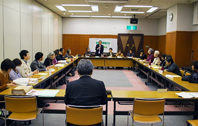

|
|
第52回埼玉県消費者大会実行委員会 12月2日(金)10時30分より、埼玉教育会館202会議室にて第7回実行委員会が開催され、32人(22団体・事務局2人)が出席しました。 【議題】 1．第52回消費者大会関連 （1）振り返りについて 事務局より実施報告書、参加者アンケート集計結果、各団体参加人数、第1回実行委員会から話し合ってきた内容について報告しました。その後、各団体からのふりかえりの発言と、意見交換を行いました。出された意見の抜粋は次のとおりです。
（2）決算状況について 事務局より、現時点での決算について、執行状況と今年度の特徴点について報告し、確認されました。あわせて、確定した決算書は第53回大会の第1回実行委員会に報告することを確認しました。 （3）食の分科会講師変更に関するお詫び 事務局よりお詫びと経過について報告を行いました。 2．第53回埼玉県消費者大会の運営体制について 事務局より、第53回大会実行委員会に引き継ぐ内容について提案し、運営体制、日程、会場、すすめ方などを確認しました。
3．埼玉県との懇談会のすすめ方について 当日、実行委員会終了後に午後から行う｢埼玉県との懇談会｣のすすめ方、重点項目にあげた17項目の確認、内容を深めるための発言について話し合いました。 4．実行委員会団体へのお知らせ 県内消費者団体地区別交流会、埼玉消費者被害をなくす会学習会、加須市くらしの会学習会について  |